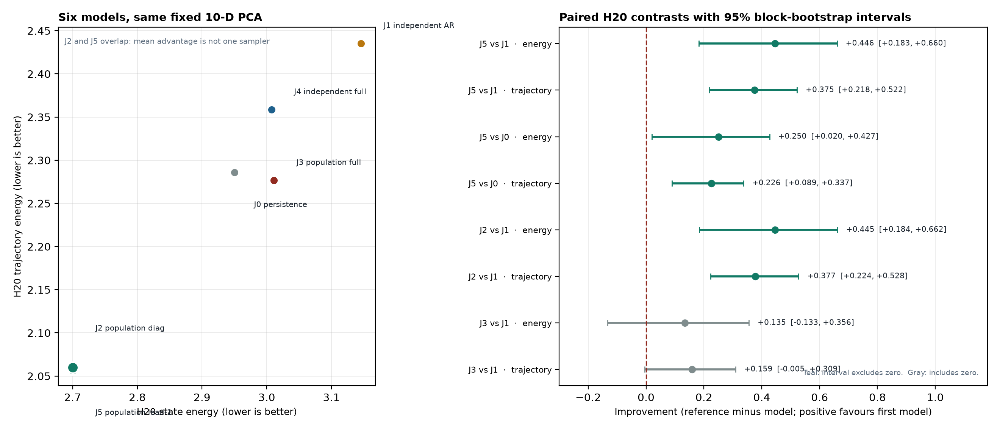
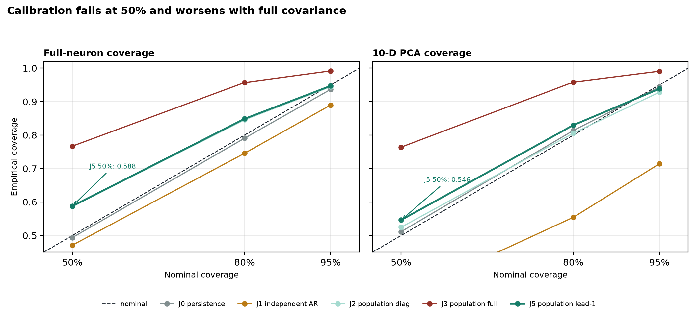
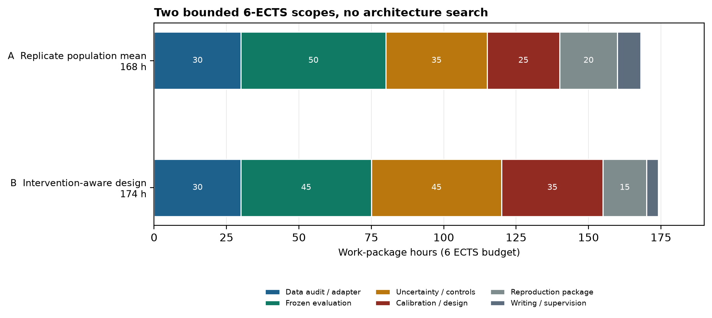

NeuroBranch: Evaluating Generative Neural Population Dynamics and
Model-Dependent Perturbations in C. elegansInternal MSc handoff · exploratory reanalysis · November 2026
This is a handoff of what the repository can and cannot support. The original
brief from our conversation is reconstructed, not confirmed. I will separate the
one result I think is worth following from the many claims the data do not
support.
Provisional: preparation, target circuit, intervention modality, behavioural
endpoint and deliverables were not specified in writing.
The motivating picture was low-dimensional trajectories that appear to branch,
and a virtual perturbation that changes the probability of one future. That is a
good scientific question, but it is not yet an operational specification. The
project deliberately treats the exact assignment as open.
| Workstream | What it established |
|---|---|
| BunDLe-Net / NC-MCM audit | distributed embedding is transductive; NC-MCM test ported, training not reproduced |
| Kato baselines | persistence is strong; nonlinear free-running models do not robustly beat it |
| Randi intervention atlas | 3,371 events, 110 animals; low reliability; held-out-target effect misses its gate |
| Branching / turn direction | entropy deficit, not excess; no neural increment beyond behaviour |
| Simulator | software contract passes; dynamical and perturbation-specificity gates fail |
| Calibration / joint dynamics | overdispersion corrected; mean signal survives; calibration fails |
This is six workstreams and several negative results. The important point is that
they are connected: each one removes a possible explanation for the next.
The project did not fail because one model was badly tuned. It failed repeatedly
at different levels. That pattern is why I stopped adding architectures and
started treating the problem as measurement- and design-limited.
Fixed 10-D PCA, training frames only. 175 H20 landmarks. 100 members.
| Contrast | Improvement | 95% interval |
|---|---|---|
| J5 population vs J1 independent AR, energy | +0.446 | [0.183, 0.660] |
| J5 vs J1, trajectory | +0.375 | [0.218, 0.522] |
| J5 vs persistence, energy | +0.250 | [0.020, 0.427] |
| J5 vs J1, full-neuron CRPS | +0.005 | [−0.007, 0.016] |
J2 (parametric diagonal) is effectively identical: energy 2.700, trajectory 2.058.

This is the result I would defend, with qualifications. The population
conditional mean carries joint information that independent AR misses. It is not
a marginal per-neuron gain. It is not a covariance gain. It is a joint
trajectory gain in one fixed representation. J2 reproduces it, so it is not an
artefact of one bootstrap.
This is the most useful scientific decomposition. It tells the next study what
to replicate: the mean operator, not a more elaborate noise model. It also
explains why adding covariance made things worse rather than better.
Stop label: PROBABILISTIC CALIBRATION NOT ESTABLISHED.

The model over-covers at 50%, and its covariance is wrong. That is not a cosmetic
problem: it means the ensemble cannot be read as a calibrated distribution of
alternative futures. The test reuse and session structure make even the positive
result exploratory.
MODEL-DEPENDENT VIRTUAL PERTURBATION — NOT CAUSALLY VALIDATED.
Biological validation: NOT_EVALUABLE.
I want to be very explicit here. A virtual perturbation can be useful for
generating hypotheses, but it cannot validate them. The model's causal graph is
assumed, not identified. Observational data alone cannot tell us what would
happen under a real stimulation.
Do not run another architecture search on the reused test split.
A. Replicate the population mean. Independent cohort; fixed representation;
H20 joint energy; J1 and persistence baselines; animal-level resampling.
150–180 h.
B. Intervention-aware design. Specify target, timing, sham and outcome;
audit matched data; run a minimal held-out-animal/-target falsification test.
Deliver a protocol, not a causal simulator.

The choice depends on what you want the MSc to establish. A is a clean
replication study with a prespecified endpoint. B is a design and feasibility
study that could fail early for lack of data, but it asks the intervention
question honestly. I would not promise a full causal simulator in 150 hours.
These are genuine questions, not reconstructed requirements. The answers change
the scope, the data request and the claim boundary.
| Section | Time |
|---|---|
| Title, question, scope | 1:25 |
| What was tested and the evidence ladder | 1:55 |
| Central result and decomposition | 2:25 |
| Failures and perturbation boundary | 2:10 |
| Decision, next studies, questions | 1:40 |
| Total | 9:35 |
For a strict 8-minute slot, drop slide 6 and fold its one-sentence conclusion
into slide 5.
HANDOFF_DEMO_GUIDE.md contain every number.